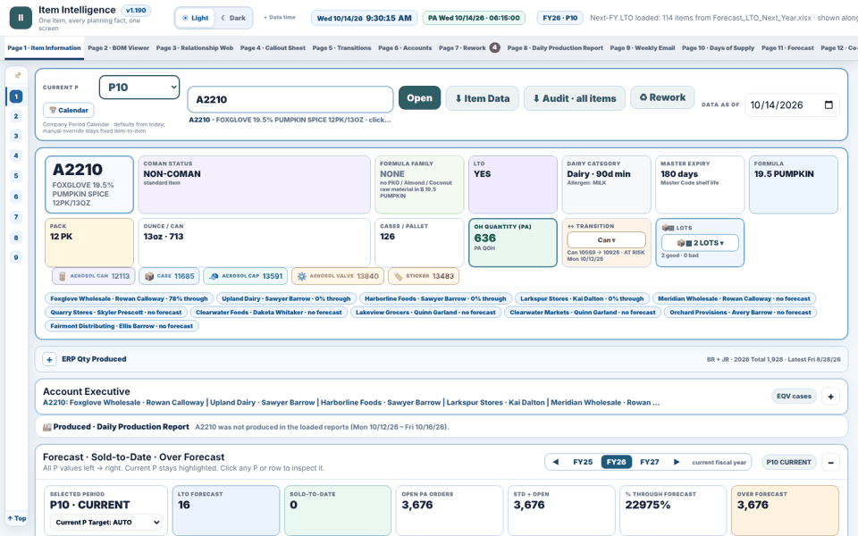

One item, every planning fact, one screen.
Item Intelligence
To answer "can we run this item next week?" a planner had to open six ERP exports, the BOM, the lot list and the live schedule, then reconcile them by hand.
- Search one item and see forecast, sold-to-date, on hand, open orders, materials, lots, transitions and where it sits on this week's schedule.
- The callout sheet lists, for the next weeks, every item whose orders exceed forecast or whose tightest material runs out before the order date.
- The daily production report and the weekly schedule email are built from the same files as the item pages, so every number matches.